La tarea inicial arranca desde el momento en que instalamos Windows Server 2016 en el equipo,
ya que allí debemos configurar la cuenta de Administrador con su respectiva contraseña.
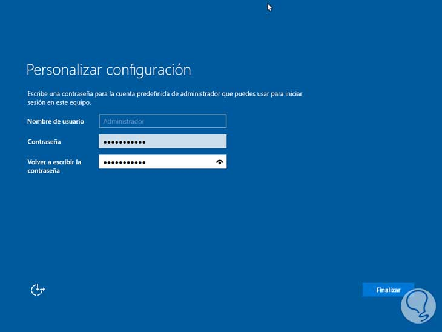
Podemos ver que después de pulsar Finalizar y al iniciar el sistema veremos la ventana del administrador del servidor.
El primer paso es modificar el nombre del equipo ya que este será el identificador en la red y si está con el nombre predeterminado será complicado
para muchos usuarios ubicarlo de forma fácil.
Podemos usar las siguientes alternativas para modificar el nombre:
Desde el administrador del servidor: Allí nos dirigimos a la opción Servidor local y allí damos clic sobre el nombre del servidor
Usando la opción Sistema: Para ello damos clic derecho sobre el botón de Inicio, seleccionamos la opción Sistema y allí elegimos:
Configuración avanzada del sistema > Nombre de equipo
Podemos ver el nombre de nuestro equipo:
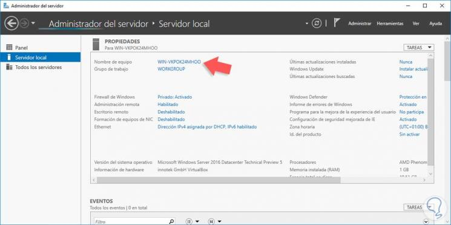
En cualquiera de estas las opciones mencionadas para modificar el nombre veremos la siguiente ventana:
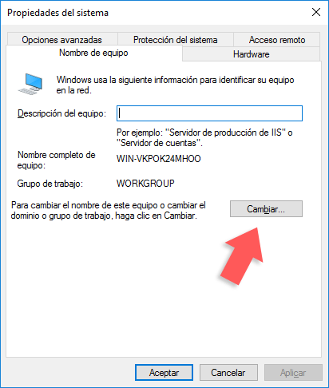
Allí seleccionamos el botón Cambiar y asignamos el nombre deseado al equipo, en este caso Solvetic_Server.
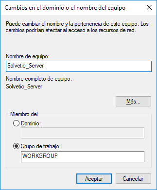
Pulsamos Aceptar y en el mensaje desplegada seleccionamos Sí
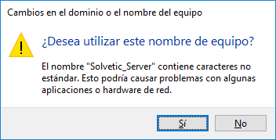
Reiniciamos el equipo para que el nombre sea modificado y podemos validar desde el administrador el nuevo nombre del equipo.
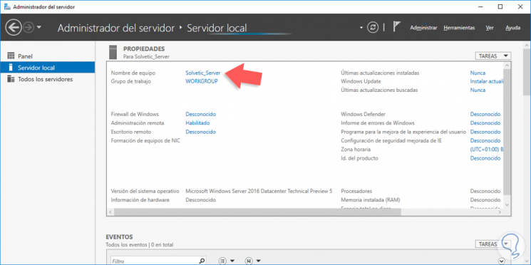
Como ha sido mencionado anteriormente, es necesario que el equipo cuente con una dirección IP estática para la estabilidad de
la red ya que una dirección IP dinámica puede afectar la conectividad entre los equipos y el dominio.
Para establecer la dirección IP en Windows Server 2016 podemos usar alguna de las siguientes opciones:
1) Ir a la ruta Panel de control / Redes e Internet / Centro de redes y recursos compartidos / Cambiar configuración del adaptador.
2) Dando clic derecho en el ícono de red ubicado en la barra de tareas y allí seleccionar la opción Centro de redes y recursos compartidos,
posteriormente seleccionar la opción Cambiar configuración del adaptador.
En la ventana desplegada seleccionamos el adaptador de red actual, pulsamos clic derecho y seleccionamos la opción Propiedades.

Se abrirá la siguiente ventana donde seleccionamos la línea Protocolo de Internet versión 4 y pulsamos Propiedades.
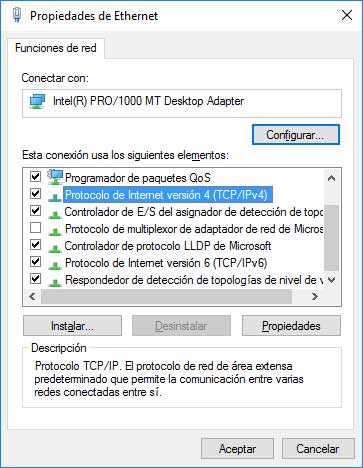
Veremos la siguiente ventana donde debemos especificar la dirección IP a asignar al equipo.
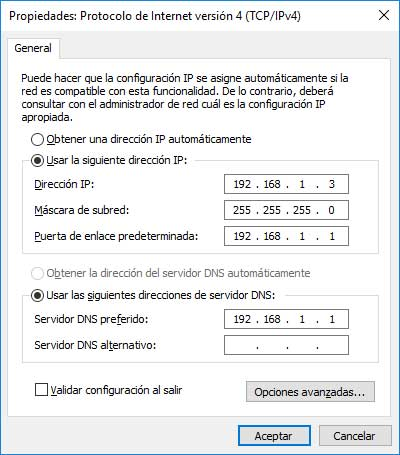
Pulsamos Aceptar para guardar y aplicar los cambios.
Una vez configurados el nombre y la dirección IP del servidor procedemos a instalar los roles respectivos.
Instalando el rol de directorio activo. El primer paso es instalar el rol de Servicios de dominio de Active Directory y para ello realizaremos
el siguiente proceso.
Desde el Administrador el servidor seleccionamos la opción Agregar roles y características donde veremos el siguiente asistente, que nos indica
que debemos comprobar que se han completado las siguientes tareas previas:
1) La cuenta administrador tiene una contraseña segura.
2) Las direcciones IP como las direcciones de red estáticas, están configuradas.
3) Las actualizaciones de Windows Update están instaladas.
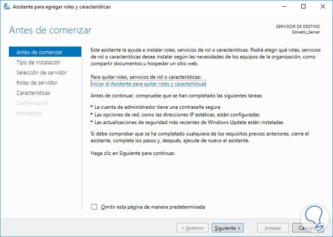
Pulsamos Siguiente para elegir el tipo de instalación la cual será la que está seleccionada por defecto: “Instalación basada en características
o en roles”.
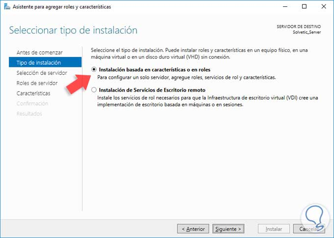
Pulsamos Siguiente y en la siguiente ventana seleccionamos el servidor donde instalaremos el rol.
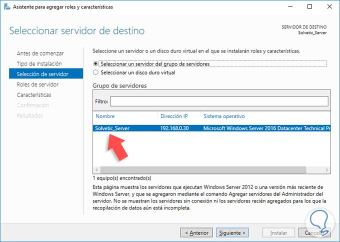
Pulsamos de nuevo Siguiente y en la siguiente ventana seleccionamos la casilla “Servicios de dominio de Active Directory”.
Lo normal es también seleccionar servidor DNS y DHCP. Pero eso ya irá en gusto y necesidades de cada empresa.
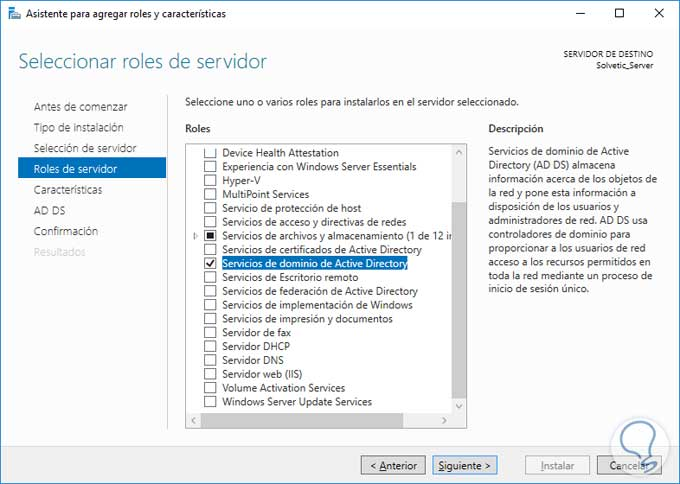
Pulsamos Siguiente y en la ventana desplegada no seleccionaremos ninguna característica por lo cual pulsamos de nuevo Siguiente
y veremos información asociada al rol a instalar.

Pulsamos Siguiente y veremos un resumen con el rol que será instalado en el servidor.
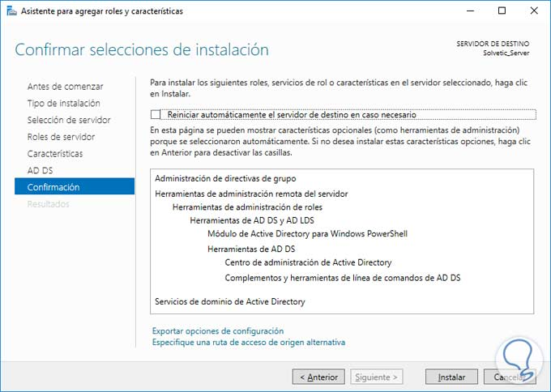
Pulsamos el botón Instalar para iniciar el proceso de instalación del rol de Servicios de dominio de Active Directory.
Posteriormente veremos que la instalación ha sido finalizada de manera correcta.
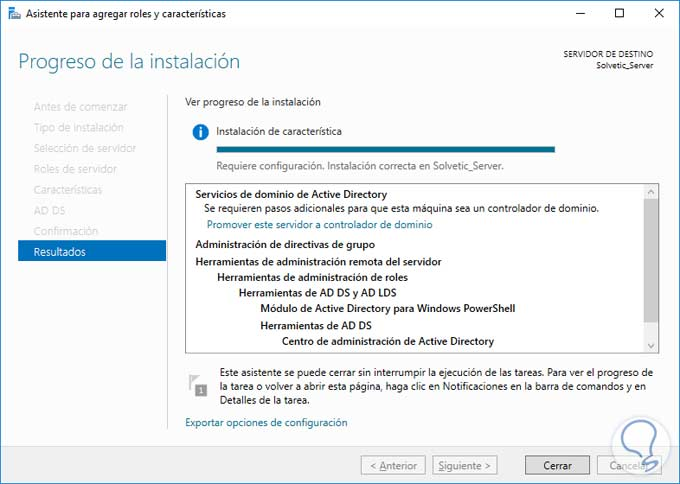
De esta forma hemos instalado el rol de servicios de dominio de Active Directory en Windows Server 2016.
El siguiente paso consiste en promover el equipo para que cumpla las funciones de controlador de dominio.
Cuando hemos instalado el rol anterior podemos ver una advertencia en la parte superior del administrador del servidor:
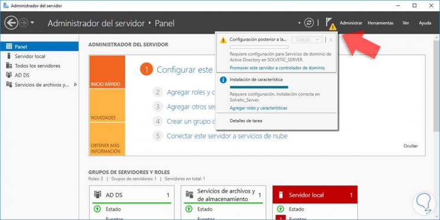
Al desplegarla debemos seleccionar la opción Promover este servidor a controlador de domino y se desplegará el siguiente asistente donde
lo primero que debemos definir es un nuevo bosque con el nombre de nuestro dominio, en este caso solvetic.com
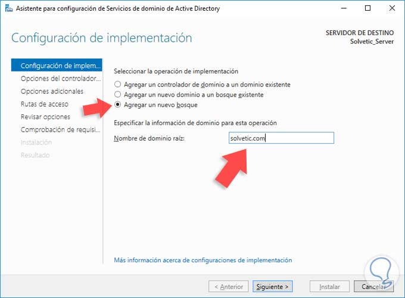
Pulsamos Siguiente y en la próxima ventana debemos definir los siguientes parámetros:
1) Nivel funcional del bosque
2) Nivel funcional del dominio
3) Definir las funciones del dominio (Ser DNS, RODC, etc)
4) Contraseña DSRM (Esta aplica cuando debemos iniciar el directorio activo en modo de restauración
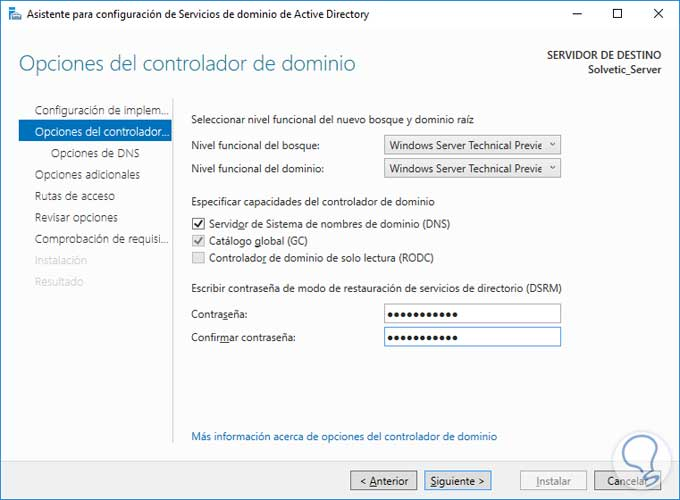
Pulsamos Siguiente y en la ventana desplegada sobre la delegación del DNS podemos omitirla pulsando de nuevo
Siguiente y a continuación veremos el nombre de NetBIOS del equipo.
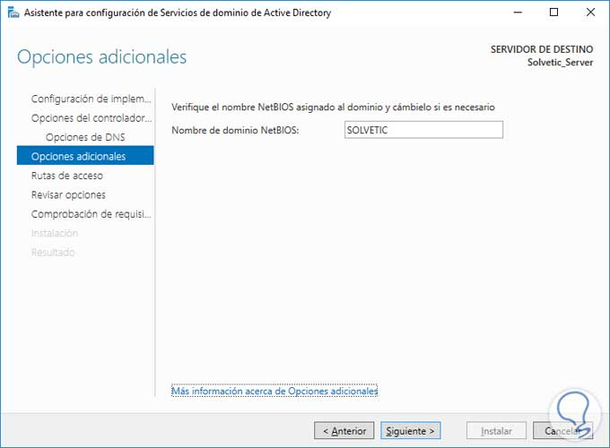
De nuevo pulsamos Siguiente y veremos las rutas donde se almacenarán los archivos de registro, de sistema, etc, estos valores no es recomendable
modificarlos.
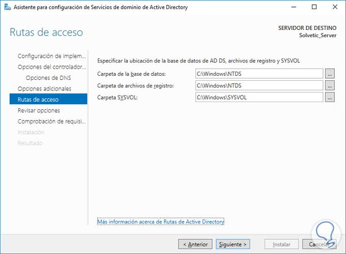
Pulsamos Siguiente y veremos un resumen con las características y funcionalidades a instalar.
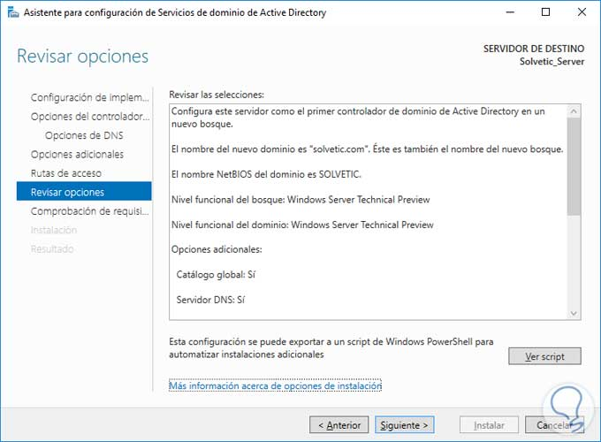
Al pulsar Siguiente el sistema comprobará que todos los parámetros estén correctos para iniciar el proceso de promoción a controlador de dominio.
Si todos los requisitos están correctos veremos lo siguiente:
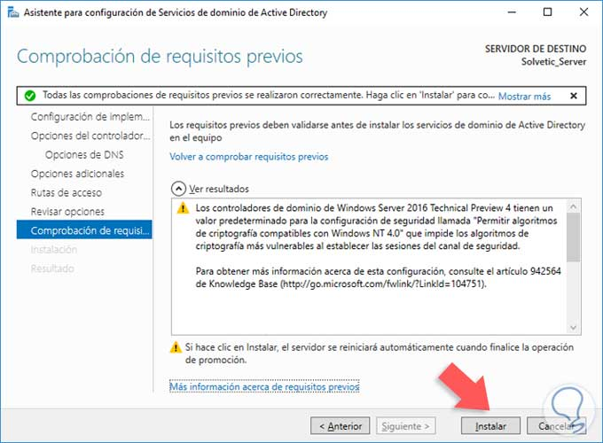
Pulsamos Instalar para iniciar el proceso de promoción a controlador de dominio en Windows Server 2016. Una vez promovido el equipo debemos reiniciar el
sistema para que todos los cambios surtan efecto.
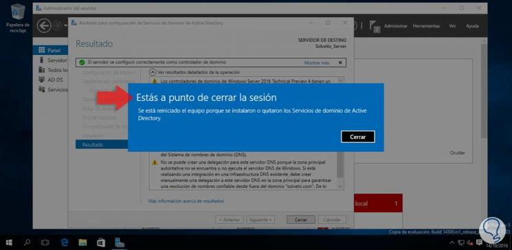
Validación de que el servidor ha sido promovido a controlador de dominio. Una vez el equipo se reinicie podemos validar que todo ha sido correcto desde el
inicio de sesión ya que veremos el nombre del dominio en la ventana de login:
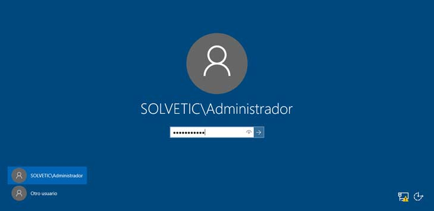
Ahora en el administrador del servidor podemos ver que el equipo gestiona el dominio.
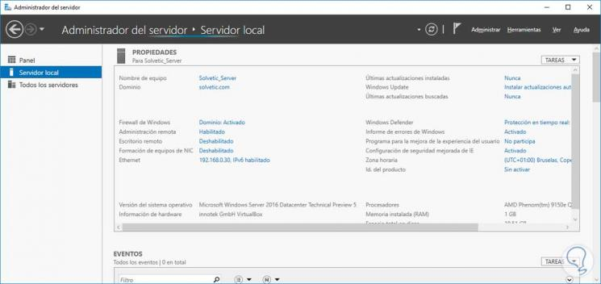
A partir de este momento podremos iniciar las tareas de gestión y administración de usuarios y grupos usando Usuarios y equipos de Active Directory.